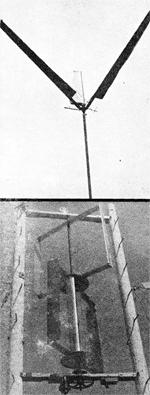

Some of the more interesting wind power experiments(both "conventional" and "far out") now being conducted with the "little guy" in mind are the brainchildren of a Californian named Jack Park. Jack, a former aerospace engineer (until the bottom dropped out of that labor market), is also a longtime member of the Experimental Aircraft Association and his work with build your-own has given Park more than a casual working knowledge of airfoils and how to use them.
At present, Jack Park is directing some interesting tests on what he calls "hybrid" windplants as the accompanying photographs should indicate. We'll try to bring you up to date on that work before the summer is over.
And until we get back to Jack, you should know that he sells for $8.00--a 72-page manual titled Simplified Wind Power Systems for Experimenters. The book is especially written for designers and builders who lack engineering degrees and it explains some fairly complicated concepts in marvelously simplified language. So if you've been looking for an introduction, to wind power that you con understand, this is it. And there's more: When you plunk down eight bucks for Park's manual, you automatically put yourself on a list to receive a minimum of two newsletters that will update his book as new developments in harnessing the breeze are made.
If that sounds good, drop your name and address and $8.00 in the mail addressed to Jack Park, Box 4301, Sylmar, California 91342. Tell him MOTHER sent you.
|
 |
|
|